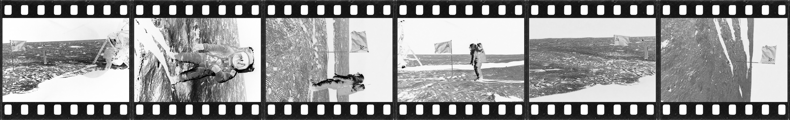
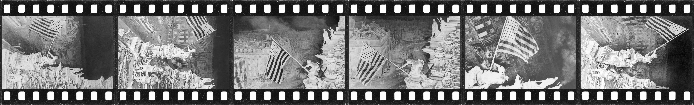
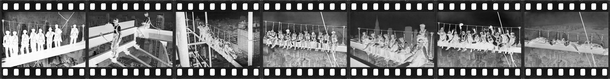
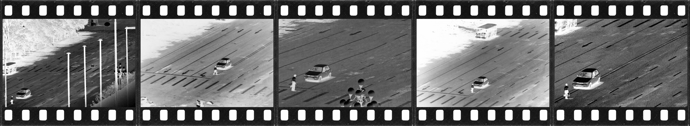

Oct 2026
False Negatives
False Negatives is a project about the collapse of photographic evidence. It presents AI-manipulated historical photographs as if they were authentic archival objects. By altering iconic images from the past and then printing them onto genuine black-and-white negatives or positive film slides, the work asks viewers to confront how fragile our trust in visual documentation has become.
When any photograph can be fabricated, every photograph can be doubted. Then, the future fills with images that are real but can’t be trusted: a past lost to false negatives.



